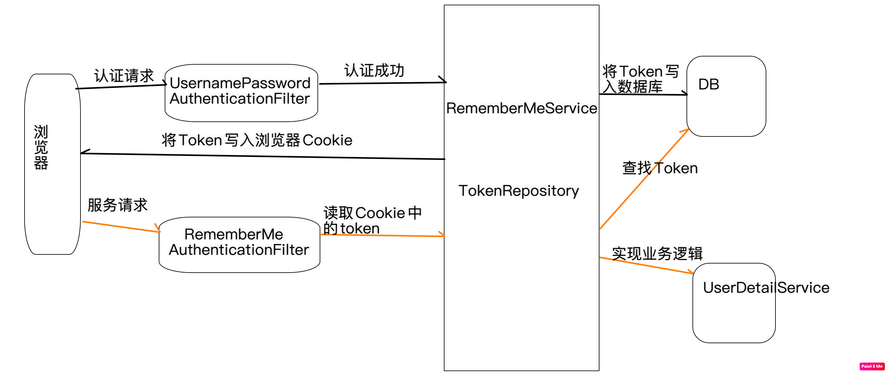
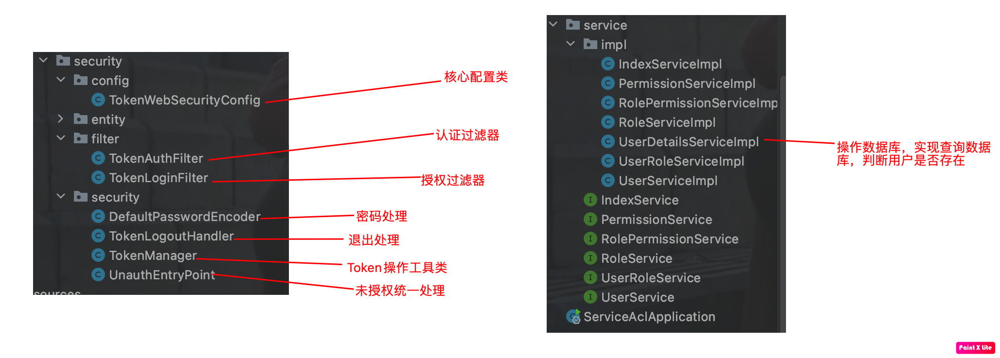

Spring Security框架学习 一、基本概念 Spring Security主要两大核心功能：“认证” 和“授权”
Spring Security本质是过滤链 ，过滤器有很多，主要的三个：方法级，错误，登录
FilterSecurityInterceptor：方法级权限过滤器，位于过滤链最底部
ExceptionTranslationFilter：是个异常过滤器，用来处理在认证授权过程中抛出的异常
UsernamePasswordAuthenticationFilter ：对/login 的 POST 请求做拦截，校验表单中用户名，密码。
过滤器加载过程
两个重要接口：
UserDetailService 查询数据库用户密码的过程
PasswodeEncoder 密码加密
二、web权限方案 1.设置登录用户名密码 1.通过配置文件
1 2 3 server.port =9111 spring.security.user.name =maizhudeaimu spring.security.user.password =123456
2.通过配置类
1 2 3 4 5 6 7 8 9 10 11 12 13 @Configuration public class SecurityConfig extends WebSecurityConfigurerAdapter @Override protected void configure (AuthenticationManagerBuilder auth) throws Exception BCryptPasswordEncoder bCryptPasswordEncoder = new BCryptPasswordEncoder(); String encode = bCryptPasswordEncoder.encode("123" ); auth.inMemoryAuthentication().withUser("aimu" ).password(encode).roles("admin" ); } @Bean PasswordEncoder password () { return new BCryptPasswordEncoder(); } }
报错：There is no PasswordEncoder mapped for the id “null”，原因是没有把BCryptPasswordEncoder的bean注入容器与之绑定
1 2 3 4 @Bean PasswordEncoder password () { return new BCryptPasswordEncoder(); }
3.自定义编写实体类
上述两种方式不常用，我们实现业务时主要通过数据库查询用户名密码，所以第三种比较重要。
1.创建配置类，决定使用哪一个userDetailService实现类
1 2 3 4 5 6 7 8 9 10 11 12 13 @Configuration public class SecurityConfigTest extends WebSecurityConfigurerAdapter @Autowired private UserDetailsService userDetailsService; @Override protected void configure (AuthenticationManagerBuilder auth) throws Exception auth.userDetailsService(userDetailsService).passwordEncoder(password()); } @Bean PasswordEncoder password () { return new BCryptPasswordEncoder(); } }
2.编写实现类，返回User对象，里面含有username和password
1 2 3 4 5 6 7 8 9 10 11 12 13 14 15 16 17 18 19 @Service("userDetailsService") public class MyUserDetailService implements UserDetailsService @Autowired private UserMapper userMapper; @Override public UserDetails loadUserByUsername (String username) throws UsernameNotFoundException QueryWrapper<cn.aimu.securitydemo1.entity.User> wrapper = new QueryWrapper<>(); wrapper.eq("username" ,username); cn.aimu.securitydemo1.entity.User user = userMapper.selectOne(wrapper); if (user == null ){ throw new UsernameNotFoundException("用户名不存在！！" ); } List<GrantedAuthority> auths = AuthorityUtils.commaSeparatedStringToAuthorityList("role" ); return new User(user.getUsername(),new BCryptPasswordEncoder().encode(user.getPassword()),auths); } }
2.自定义登录页面
定义一个login.html页面
1 2 3 4 5 6 7 8 9 10 11 12 13 14 15 16 <!DOCTYPE html > <html lang ="en" > <head > <meta charset ="UTF-8" > <title > Spring Security登录</title > </head > <body > <form action ="/user/login" method ="post" > 用户名：<input type ="text" name ="username" /> <br /> 密码：<input type ="text" name ="password" /> <br /> <input type ="submit" value ="login" /> </form > </body > </html >
要实现自定义登录页面需要重写另一个configure方法
1 2 3 4 5 6 7 8 9 10 11 12 13 14 15 16 17 18 19 20 21 22 23 24 25 @Configuration public class SecurityConfigTest extends WebSecurityConfigurerAdapter @Autowired private UserDetailsService userDetailsService; @Override protected void configure (AuthenticationManagerBuilder auth) throws Exception auth.userDetailsService(userDetailsService).passwordEncoder(password()); } @Bean PasswordEncoder password () { return new BCryptPasswordEncoder(); } @Override protected void configure (HttpSecurity http) throws Exception http.formLogin() .loginPage("/login.html" ) .loginProcessingUrl("/user/login" ) .defaultSuccessUrl("/test/index" ).permitAll() .and().authorizeRequests() .antMatchers("/" ,"/test/hello" ,"/user/login" ).permitAll() .anyRequest().authenticated() .and().csrf().disable(); } }
3.基于角色或权限进行访问控制
hasAuthority 方法
具有某一个权限
1 2 3 4 5 antMatchers("/test/index" ).hasAuthority("admins" ) List<GrantedAuthority> auths = AuthorityUtils.commaSeparatedStringToAuthorityList("role" ); return new User(user.getUsername(),new BCryptPasswordEncoder().encode(user.getPassword()),auths);
报错There was an unexpected error (type=Forbidden, status=403).
1 2 3 List<GrantedAuthority> auths = AuthorityUtils.commaSeparatedStringToAuthorityList("admins" ); return new User(user.getUsername(),new BCryptPasswordEncoder().encode(user.getPassword()),auths);
hasAnyAuthority 方法
具有多个权限
1 2 3 4 5 6 .antMatchers("/test/index" ).hasAnyAuthority("admins,managers" ) List<GrantedAuthority> auths = AuthorityUtils .commaSeparatedStringToAuthorityList("admins" ); return new User(user.getUsername(),new BCryptPasswordEncoder().encode(user.getPassword()),auths);
hasRole 方法
具有某一单一角色
1 2 3 4 5 .antMatchers("/test/index" ).hasRole("sale" ) List<GrantedAuthority> auths = AuthorityUtils.commaSeparatedStringToAuthorityList("ROLE_sale" ); return new User(user.getUsername(),new BCryptPasswordEncoder().encode(user.getPassword()),auths);
需要注意的是跟Role有关的设置名字时不能以ROLE_开头，源码：
1 2 3 4 5 6 7 8 private static String hasRole (String role) Assert.notNull(role, "role cannot be null" ); if (role.startsWith("ROLE_" )) { throw new IllegalArgumentException("role should not start with 'ROLE_' since it is automatically inserted. Got '" + role + "'" ); } else { return "hasRole('ROLE_" + role + "')" ; } }
传进去的role值被改为ROLE_role值所有在service设置角色时要加上前缀
hasAnyRole 方法
具有多个角色中任意一种，配置方式和上面差不多，不在赘述。
4.自定义403页面 1.配置类–直接在confige方法写上这样一行代码，表示设置403错误页面
1 http.exceptionHandling().accessDeniedPage("/unauth.html" );
2.再写一个html页面。。
3.然后测试
5.注解使用 第一步：启动类（配置类）开启注解@EnableGlobalMethodSecurity(securedEnabled = true)
第二步：在controller的方法上添加下面的注解，设置角色或权限
第三步：在UserDetailService上设置用户所具有的角色或权限
1.@Secured
用户具有某个角色，可以访问方法
2.@PreAuthorize
在方法执行前检验，在里面写前面说到的四个方法
3.@PostAuthorize
在方法执行后检验
4.@PostFilter
在方法执行后过滤返回值，可以过滤掉不需要的返回值
5.@PreFilter
过滤参数中不需要的值
1 2 3 4 5 6 7 8 9 10 11 @GetMapping("update") @PreAuthorize("hasAnyAuthority('admins')") @PostFilter("filterObject.username == 'admin1'") public List<User> update () ArrayList<User> users = new ArrayList<>(); users.add(new User(3 ,"admin1" ,"123" )); users.add(new User(4 ,"24235" ,"123" )); System.out.println(users); return users; }
6.自动登录 自动登录其实是数据库中维护一个用户信息和加密串的表，cookies中存放加密串，当第一次登录时通过RememberMeService将加密串分别存入cookies和数据库中，第二次访问时，拿cookies的加密串去数据库查询，如果有匹配的并且相隔时间不超过设置的有效时长，那么就能实现自动登录。
原理图：

1.配置类，注入数据源，配置操作数据库对象
1 2 3 4 5 6 7 8 9 @Autowired private DataSource dataSource; @Bean public PersistentTokenRepository persistentTokenRepository () JdbcTokenRepositoryImpl jdbcTokenRepository = new JdbcTokenRepositoryImpl(); jdbcTokenRepository.setDataSource(dataSource); return jdbcTokenRepository; }
2.配置类中配置自动登录
1 2 3 .and().rememberMe().tokenRepository(persistentTokenRepository()) .tokenValiditySeconds(60 ) .userDetailsService(userDetailsService)
3.登录页面修改
1 <input type ="checkbox" name ="remember-me" /> 自动登录
name值一定是remember-me，框架中要求的
7.CSRF–跨站请求伪造
在登录页面添加一个隐藏域
1 2 3 <input type ="hidden" th:if ="${_csrf}!=null" th:value ="${_csrf.token}" name ="_csrf " />
关闭安全配置的类中的 csrf
CSRF防护步骤：
1.第一次请求生成csrfToken保存到session或者Cookie中
2.后面的请求到来时，从请求中提取csrfToken和保存的做比较，判断请求是否合法。主要通过CsrfFilter过滤器完成。
三、微服务权限方案 1.根据案例后台用户角色菜单之间的关系构建数据库表：五张表：用户表、角色表、菜单表、用户角色多对多表、角色菜单多对多表。
2.创建微服务工程，导入依赖，导入一些工具类
3.编写security认证授权工具类和处理器

1).DefaultPasswordEncoder–密码加密工具类
1 2 3 4 5 6 7 8 9 10 11 12 13 14 15 16 17 18 19 @Component public class DefaultPasswordEncoder implements PasswordEncoder public DefaultPasswordEncoder () this (-1 ); } public DefaultPasswordEncoder (int strength) } @Override public String encode (CharSequence charSequence) return MD5.encrypt(charSequence.toString()); } @Override public boolean matches (CharSequence charSequence, String encodedPassword) return encodedPassword.equals(MD5.encrypt(charSequence.toString())); } }
有两个方法，一个是密码加密，用在存入数据库时，密码不能用明文存储，所以加密后存储；一个是密码比对，验证登录用户密码是否正确时，使用这个方法。
2).TokenManager
1 2 3 4 5 6 7 8 9 10 11 12 13 14 15 16 17 18 19 20 21 @Component public class TokenManager private long tokenEcpiration = 24 *60 *60 *1000 ; private String tokenSignKey = "123456" ; public String createToken (String username) String token = Jwts.builder().setSubject(username) .setExpiration(new Date(System.currentTimeMillis()+tokenEcpiration)) .signWith(SignatureAlgorithm.HS512, tokenSignKey).compressWith(CompressionCodecs.GZIP).compact(); return token; } public String getUserInfoFromToken (String token) String userinfo = Jwts.parser().setSigningKey(tokenSignKey).parseClaimsJws(token).getBody().getSubject(); return userinfo; } public void removeToken (String token) }
三个方法：1.生成Token，根据jwt规则；2.从Token中获取信息，都是用JWT工具类操作；3.删除token（未实现）
3).TokenLogoutHandler
1 2 3 4 5 6 7 8 9 10 11 12 13 14 15 16 17 18 19 20 21 22 23 24 public class TokenLogoutHandler implements LogoutHandler private TokenManager tokenManager; private RedisTemplate redisTemplate; public TokenLogoutHandler (TokenManager tokenManager,RedisTemplate redisTemplate) this .tokenManager = tokenManager; this .redisTemplate = redisTemplate; } @Override public void logout (HttpServletRequest request, HttpServletResponse response, Authentication authentication) String token = request.getHeader("token" ); if (token != null ) { tokenManager.removeToken(token); String username = tokenManager.getUserInfoFromToken(token); redisTemplate.delete(username); } ResponseUtil.out(response, R.ok()); } }
业务逻辑是退出时将header中的token移除，并且把redis中的token删除
4).UnauthEntryPoint
1 2 3 4 5 6 public class UnauthEntryPoint implements AuthenticationEntryPoint @Override public void commence (HttpServletRequest httpServletRequest, HttpServletResponse httpServletResponse, AuthenticationException e) throws IOException, ServletException ResponseUtil.out(httpServletResponse, R.error()); } }
未授权就报异常
5).TokenLoginFilter
1 2 3 4 5 6 7 8 9 10 11 12 13 14 15 16 17 18 19 20 21 22 23 24 25 26 27 28 29 30 31 32 33 34 35 36 37 38 39 40 41 42 43 44 45 46 47 48 49 50 public class TokenLoginFilter extends UsernamePasswordAuthenticationFilter private TokenManager tokenManager; private RedisTemplate redisTemplate; private AuthenticationManager authenticationManager; public TokenLoginFilter (AuthenticationManager authenticationManager, TokenManager tokenManager, RedisTemplate redisTemplate) this .authenticationManager = authenticationManager; this .tokenManager = tokenManager; this .redisTemplate = redisTemplate; this .setPostOnly(false ); this .setRequiresAuthenticationRequestMatcher(new AntPathRequestMatcher("/admin/acl/login" ,"POST" )); } @Override public Authentication attemptAuthentication (HttpServletRequest request, HttpServletResponse response) throws AuthenticationException { try { User user = new ObjectMapper().readValue(request.getInputStream(), User.class); return authenticationManager.authenticate(new UsernamePasswordAuthenticationToken(user.getUsername(),user.getPassword(), new ArrayList<>())); } catch (IOException e) { e.printStackTrace(); throw new RuntimeException(); } } @Override protected void successfulAuthentication (HttpServletRequest request, HttpServletResponse response, FilterChain chain, Authentication authResult) throws IOException, ServletException { SecurityUser user = (SecurityUser)authResult.getPrincipal(); String token = tokenManager.createToken(user.getCurrentUserInfo().getUsername()); redisTemplate.opsForValue().set(user.getCurrentUserInfo().getUsername(),user.getPermissionValueList()); ResponseUtil.out(response, R.ok().data("token" ,token)); } protected void unsuccessfulAuthentication (HttpServletRequest request, HttpServletResponse response, AuthenticationException failed) throws IOException, ServletException { ResponseUtil.out(response, R.error()); } }
认证过滤器：1.认证前获取表单数据；2.认证成功后生成token，存入redis，返回token到header中；3.失败就返回错误
6).TokenAuthFilter
1 2 3 4 5 6 7 8 9 10 11 12 13 14 15 16 17 18 19 20 21 22 23 24 25 26 27 28 29 30 31 32 33 34 35 36 37 38 39 40 public class TokenAuthFilter extends BasicAuthenticationFilter private TokenManager tokenManager; private RedisTemplate redisTemplate; public TokenAuthFilter (AuthenticationManager authenticationManager,TokenManager tokenManager,RedisTemplate redisTemplate) super (authenticationManager); this .tokenManager = tokenManager; this .redisTemplate = redisTemplate; } @Override protected void doFilterInternal (HttpServletRequest request, HttpServletResponse response, FilterChain chain) throws IOException, ServletException UsernamePasswordAuthenticationToken authRequest = getAuthentication(request); if (authRequest != null ) { SecurityContextHolder.getContext().setAuthentication(authRequest); } chain.doFilter(request,response); } private UsernamePasswordAuthenticationToken getAuthentication (HttpServletRequest request) String token = request.getHeader("token" ); if (token != null ) { String username = tokenManager.getUserInfoFromToken(token); List<String> permissionValueList = (List<String>)redisTemplate.opsForValue().get(username); Collection<GrantedAuthority> authority = new ArrayList<>(); for (String permissionValue : permissionValueList) { SimpleGrantedAuthority auth = new SimpleGrantedAuthority(permissionValue); authority.add(auth); } return new UsernamePasswordAuthenticationToken(username,token,authority); } return null ; } }
从header中获取token，在从token中获取用户信息，到redis查询权限列表，返回
7).TokenWebSecurityConfig
1 2 3 4 5 6 7 8 9 10 11 12 13 14 15 16 17 18 19 20 21 22 23 24 25 26 27 28 29 30 31 32 33 34 35 36 37 38 39 40 41 42 43 44 45 46 47 48 49 @Configuration @EnableWebSecurity @EnableGlobalMethodSecurity(prePostEnabled = true) public class TokenWebSecurityConfig extends WebSecurityConfigurerAdapter private TokenManager tokenManager; private RedisTemplate redisTemplate; private DefaultPasswordEncoder defaultPasswordEncoder; private UserDetailsService userDetailsService; @Autowired public TokenWebSecurityConfig (UserDetailsService userDetailsService, DefaultPasswordEncoder defaultPasswordEncoder, TokenManager tokenManager, RedisTemplate redisTemplate) this .userDetailsService = userDetailsService; this .defaultPasswordEncoder = defaultPasswordEncoder; this .tokenManager = tokenManager; this .redisTemplate = redisTemplate; } @Override protected void configure (HttpSecurity http) throws Exception http.exceptionHandling() .authenticationEntryPoint(new UnauthEntryPoint()) .and().csrf().disable() .authorizeRequests() .anyRequest().authenticated() .and().logout().logoutUrl("/admin/acl/index/logout" ) .addLogoutHandler(new TokenLogoutHandler(tokenManager,redisTemplate)).and() .addFilter(new TokenLoginFilter(authenticationManager(), tokenManager, redisTemplate)) .addFilter(new TokenAuthFilter(authenticationManager(), tokenManager, redisTemplate)).httpBasic(); } @Override public void configure (AuthenticationManagerBuilder auth) throws Exception auth.userDetailsService(userDetailsService).passwordEncoder(defaultPasswordEncoder); } @Override public void configure (WebSecurity web) throws Exception web.ignoring().antMatchers("/api/**" ); } }
核心配置类：配置自己的过滤器，调用configure进行认证
7).UserDetailsServiceImpl
1 2 3 4 5 6 7 8 9 10 11 12 13 14 15 16 17 18 19 20 21 22 23 24 25 26 27 28 @Service("userDetailsService") public class UserDetailsServiceImpl implements UserDetailsService @Autowired private UserService userService; @Autowired private PermissionService permissionService; @Override public UserDetails loadUserByUsername (String username) throws UsernameNotFoundException User user = userService.selectByUsername(username); if (user == null ) { throw new UsernameNotFoundException("用户不存在" ); } com.atguigu.security.entity.User curUser = new com.atguigu.security.entity.User(); BeanUtils.copyProperties(user,curUser); List<String> permissionValueList = permissionService.selectPermissionValueByUserId(user.getId()); SecurityUser securityUser = new SecurityUser(); securityUser.setCurrentUserInfo(curUser); securityUser.setPermissionValueList(permissionValueList); return securityUser; } }